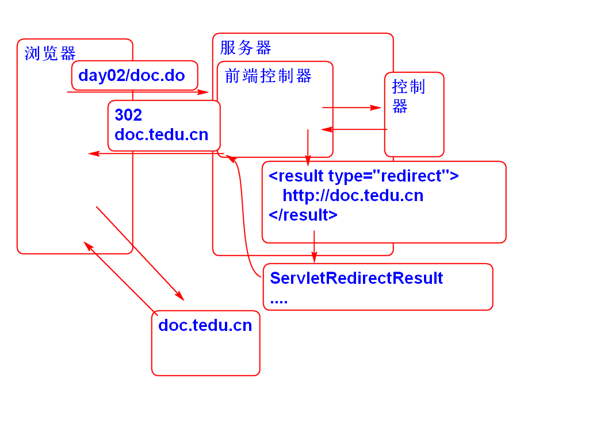
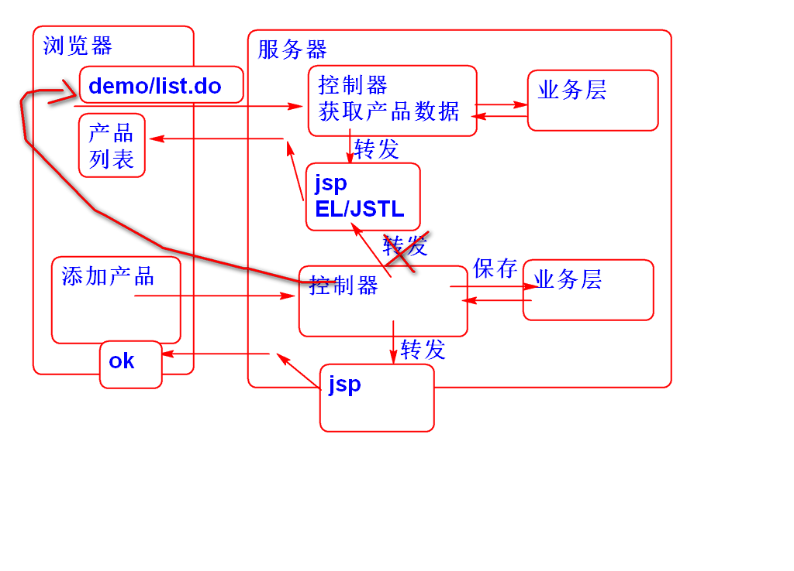
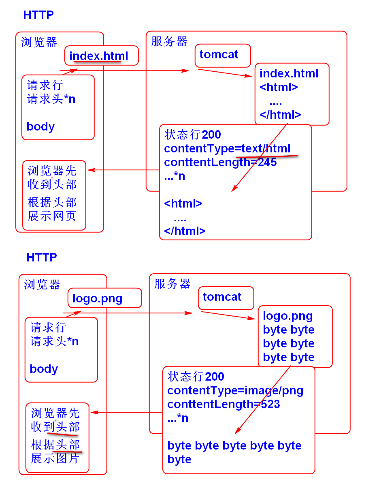
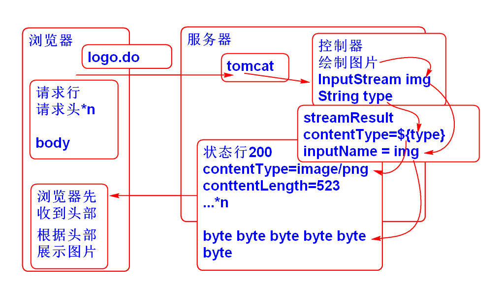
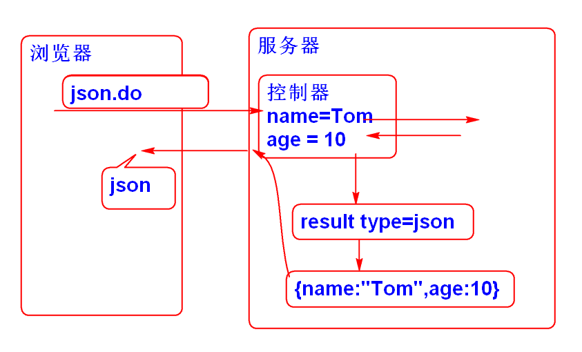
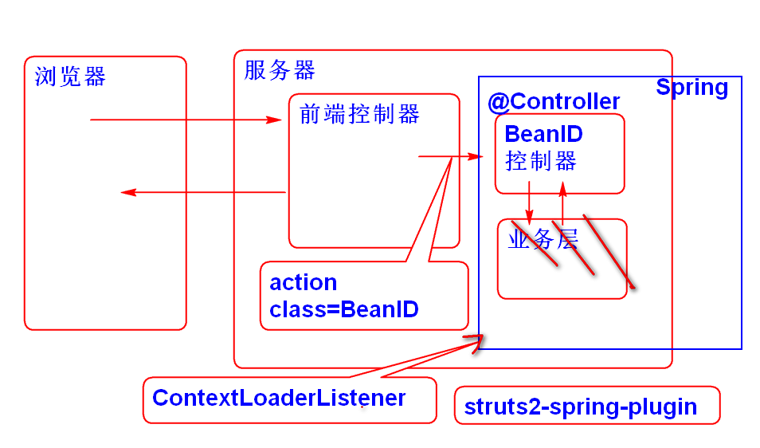

Struts2 中的视图称为结果, 有很多类型, 可以在 struts-default.xml 中看到其定义:
<result-types>
<result-type name="chain" class="com.opensymphony.xwork2.ActionChainResult"/>
<result-type name="dispatcher" class="org.apache.struts2.result.ServletDispatcherResult" default="true"/>
<result-type name="freemarker" class="org.apache.struts2.views.freemarker.FreemarkerResult"/>
<result-type name="httpheader" class="org.apache.struts2.result.HttpHeaderResult"/>
<result-type name="redirect" class="org.apache.struts2.result.ServletRedirectResult"/>
<result-type name="redirectAction" class="org.apache.struts2.result.ServletActionRedirectResult"/>
<result-type name="stream" class="org.apache.struts2.result.StreamResult"/>
<result-type name="velocity" class="org.apache.struts2.result.VelocityResult"/>
<result-type name="xslt" class="org.apache.struts2.views.xslt.XSLTResult"/>
<result-type name="plainText" class="org.apache.struts2.result.PlainTextResult" />
<result-type name="postback" class="org.apache.struts2.result.PostbackResult" />
</result-types>
默认结果类型是 dispatcher, 由类 ServletDispatcherResult 负责处理.
重定向类型 redirect 由 ServletRedirectResult 类负责解析:

使用步骤如下:
编写控制器:
public class DocAction {
public String execute(){
System.out.println("DocAction");
return "success";
}
}
配置 struts.xml
<package name="day02" namespace="/day02"
extends="struts-default">
<!-- 重定向测试 -->
<action name="doc" class="ssh.day02.DocAction">
<result name="success" type="redirect">
http://doc.tedu.cn
</result>
</action>
</package>
测试.
重定向到其他控制器的处理类: ServletActionRedirectResult

使用步骤:
配置struts.xml
<!-- 重定向到其他控制器 -->
<action name="add" class="ssh.day02.DocAction">
<result name="success"
type="redirectAction">
<param name="actionName">list</param>
<param name="namespace">/demo</param>
</result>
</action>
测试
Http协议支持多种媒体类型数据下载功能, 重要响应头是Content-Type:

Struts2 利用Stream 类型的结果封装了HTTP的下载功能:

使用步骤:
声明控制器:
public class LogoAction {
private String type;
private InputStream img;
public String getType() {
return type;
}
public void setType(String type) {
this.type = type;
}
public InputStream getImg() {
return img;
}
public void setImg(InputStream img) {
this.img = img;
}
public String execute() throws IOException{
type = "image/png";
img = createPngImage("Hello");
return "success";
}
private InputStream createPngImage(String msg)
throws IOException{
BufferedImage image = new BufferedImage(
200, 100, BufferedImage.TYPE_3BYTE_BGR);
image.setRGB(100, 50, 0xffff00);
Graphics2D g = image.createGraphics();
g.setColor(new Color(0xffff00));
g.drawString(msg, 20, 40);
//将 image 编码为 png数据(byte数组)
ByteArrayOutputStream out =
new ByteArrayOutputStream();
ImageIO.write(image, "png", out);
out.close();
byte[] data = out.toByteArray();
return new ByteArrayInputStream(data);
}
}
配置struts.xml
<!-- 动态生成图片 -->
<action name="logo" class="ssh.day02.LogoAction">
<result name="success" type="stream">
<param name="contentType">${type}</param>
<param name="inputName">img</param>
</result>
</action>
测试
在网页中展示动态图片:
<h2>显示图片</h2>
<img alt="" src="day02/logo.do">
配置struts.xml
<!-- 下载图片 -->
<action name="download-logo"
class="ssh.day02.LogoAction">
<result name="success" type="stream">
<param name="contentType">${type}</param>
<param name="inputName">img</param>
<param name="contentDisposition">
attachment;filename="logo.png"
</param>
</result>
</action>
在页面中设置下载链接
<h2>下载图片</h2>
<a href="day02/download-logo.do">下载</a>
测试
只要将上述图片下载案例是图片API更换为Excel API, 就可以实现下载Excel功能:
导入Excel API
<dependency>
<groupId>org.apache.poi</groupId>
<artifactId>poi-ooxml</artifactId>
<version>3.16</version>
</dependency>
声明控制器
public class ExcelAction {
private String type;
private InputStream excel;
public String getType() {
return type;
}
public void setType(String type) {
this.type = type;
}
public InputStream getExcel() {
return excel;
}
public void setExcel(InputStream excel) {
this.excel = excel;
}
public String execute() throws IOException{
//type 来自 tomcat/conf/web.xml
type = "application/vnd.openxmlformats-officedocument.spreadsheetml.sheet";
excel = createExcel();
return "success";
}
private InputStream createExcel() throws IOException {
//创建工作簿
XSSFWorkbook workbook=new XSSFWorkbook();
//在工作簿中创建工作表
XSSFSheet sheet = workbook.createSheet();
//在工作表里面创建行
XSSFRow row0 = sheet.createRow(0);
XSSFRow row1 = sheet.createRow(1);
XSSFRow row2 = sheet.createRow(2);
//在行中创建单元格(cell)
XSSFCell cell = row0.createCell(0);
cell.setCellValue("编号");
row0.createCell(1).setCellValue("姓名");
row0.createCell(2).setCellValue("数量");
//添加数据
row1.createCell(0).setCellValue(1);
row1.createCell(1).setCellValue("范传奇");
row1.createCell(2).setCellValue(1);
row2.createCell(0).setCellValue(2);
row2.createCell(1).setCellValue("李某");
row2.createCell(2).setCellValue(2);
ByteArrayOutputStream out=
new ByteArrayOutputStream();
workbook.write(out);
out.close();
byte[] data = out.toByteArray();
return new ByteArrayInputStream(data);
}
}
配置 struts.xml
<!-- 下载Excel文件 -->
<action name="download-excel"
class="ssh.day02.ExcelAction">
<result name="success" type="stream">
<param name="contentType">${type}</param>
<param name="inputName">excel</param>
<param name="contentDisposition">
attachment;filename="demo.xlsx"
</param>
</result>
</action>
添加下载链接:
<h2>下载Excel</h2>
<a href="day02/download-excel.do">下载</a>
测试
Struts2 利用插件支持了 JSON 类型的 Result
<dependency>
<groupId>org.apache.struts</groupId>
<artifactId>struts2-json-plugin</artifactId>
<version>2.5.12</version>
</dependency>
在插件配置文件struts-plugin.xml中可以看到:
<package name="json-default" extends="struts-default">
<result-types>
<result-type name="json" class="org.apache.struts2.json.JSONResult"/>
<result-type name="jsonActionRedirect" class="org.apache.struts2.json.JSONActionRedirectResult"/>
</result-types>
...
只需要继承 "json-default" 就可以同时使用 json Result和struts-default 中声明的Result了.
默认情况下 JSON Result 会将控制器的全部Bean属性转换为JSON对象属性发送到浏览器:

案例:
声明控制器
public class JsonAction {
private String name;
private int age;
public String getName() {
return name;
}
public void setName(String name) {
this.name = name;
}
public int getAge() {
return age;
}
public void setAge(int age) {
this.age = age;
}
public String execute(){
name = "Tom";
age = 10;
return "success";
}
}
配置 struts.xml
<package name="test" namespace="/test"
extends="json-default">
<action name="json" class="ssh.day02.JsonAction">
<result name="success" type="json"></result>
</action>
</package>
测试
为了更加灵活的发送JSON数据, 经常用一个JavaBean封装JSON数据, 并且只发送这个一个属性到客户端:
案例步骤:
声明JavaBean, JsonResult 类
public class JsonResult {
private static final int SUCCESS=1;
private static final int ERROR=0;
/**状态*/
private int state;
/**对应状态的消息*/
private String message;
/**具体业务数据*/
private Object data;
/**此构造方法应用于data为null的场景*/
public JsonResult(){
this.state=SUCCESS;//1
this.message="OK";
}
/**有具体业务数据返回时,使用此构造方法*/
public JsonResult(Object data){
this();
this.data=data;
}
/**出现异常以后要调用此方法封装异常信息*/
public JsonResult(Throwable t){
this.state=ERROR;
this.message=t.getMessage();
}
public Object getData() {
return data;
}
public int getState() {
return state;
}
public String getMessage() {
return message;
}
public void setState(int state) {
this.state = state;
}
}
声明控制器
public class JsonResultAction {
private String name;
private int age;
private JsonResult jsonResult;
public String getName() {
return name;
}
public void setName(String name) {
this.name = name;
}
public int getAge() {
return age;
}
public void setAge(int age) {
this.age = age;
}
public JsonResult getJsonResult() {
return jsonResult;
}
public void setJsonResult(JsonResult jsonResult) {
this.jsonResult = jsonResult;
}
public String execute(){
name = "Tom";
age = 10;
String[] names = {"Andy","Mac","John","Jerry"};
jsonResult = new JsonResult(names);
return "success";
}
}
配置 struts.xml
<!-- 利用JsonResult封装数据发送到浏览器客户端 -->
<action name="json3"
class="ssh.day02.JsonResultAction">
<result name="success" type="json">
<param name="root">jsonResult</param>
</result>
</action>
测试
整合Struts2 和 Spring的目的是将Spring作为Struts2控制器工厂管理控制器对象.
Struts2 提供的插件 struts2-spring-plugin 完成这个功能.

具体步骤:
导入struts2-spring-plugin
<dependency>
<groupId>org.apache.struts</groupId>
<artifactId>struts2-spring-plugin</artifactId>
<version>2.5.12</version>
</dependency>
添加Spring配置文件: spring-struts2.xml
<?xml version="1.0" encoding="UTF-8"?>
<beans
xmlns="http://www.springframework.org/schema/beans"
xmlns:p="http://www.springframework.org/schema/p"
xmlns:xsi="http://www.w3.org/2001/XMLSchema-instance"
xmlns:context="http://www.springframework.org/schema/context"
xmlns:tx="http://www.springframework.org/schema/tx"
xmlns:mvc="http://www.springframework.org/schema/mvc"
xsi:schemaLocation="
http://www.springframework.org/schema/beans
http://www.springframework.org/schema/beans/spring-beans-4.1.xsd
http://www.springframework.org/schema/mvc
http://www.springframework.org/schema/mvc/spring-mvc-4.1.xsd
http://www.springframework.org/schema/tx
http://www.springframework.org/schema/tx/spring-tx-4.1.xsd
http://www.springframework.org/schema/context
http://www.springframework.org/schema/context/spring-context-4.1.xsd" >
<context:component-scan
base-package="ssh.day02"/>
</beans>
利用 ContextLoaderListener 初始化Spring容器:
<!-- 利用ContextLoaderListener初始化Spring容器 -->
<listener>
<listener-class>org.springframework.web.context.ContextLoaderListener</listener-class>
</listener>
<context-param>
<param-name>contextConfigLocation</param-name>
<param-value>classpath:spring-*.xml</param-value>
</context-param>
创建 控制器:
@Controller//BeanID: demoAction
public class DemoAction {
public String execute(){
System.out.println("Hello World!");
return "success";
}
}
配置 struts.xml
<!-- 利用Spring管理控制器对象 class=BeanID -->
<action name="demo" class="demoAction">
<result name="success">
/WEB-INF/jsp/ok.jsp
</result>
</action>
测试.